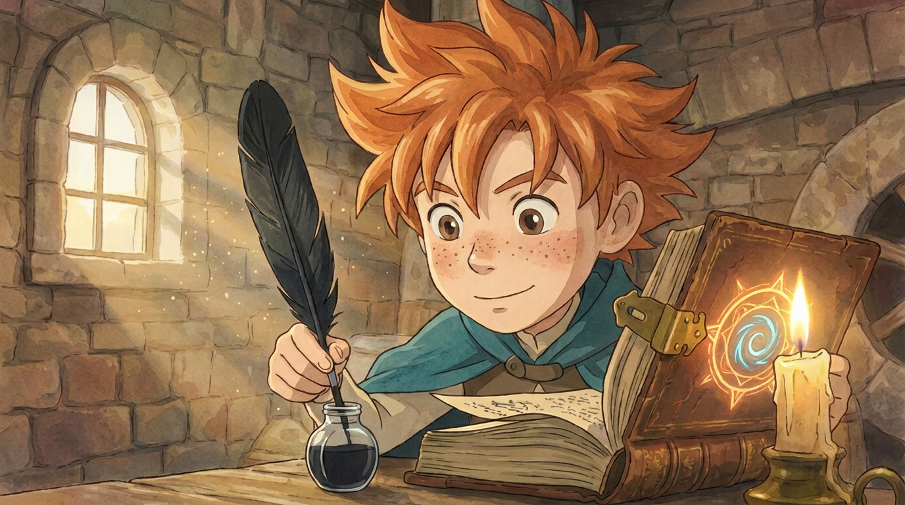
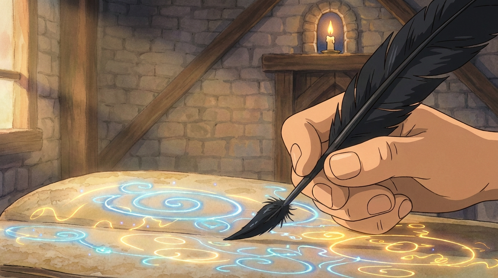
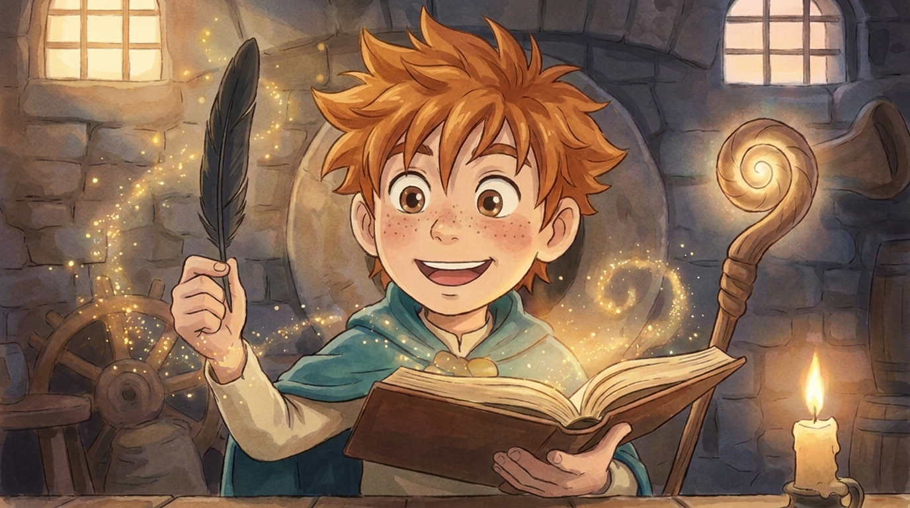

De video
Geanimeerd in Higgsfield (kling 3.0) · stille clip — speelt ook in het spel zodra Finn de spreuk schrijft
De scènes

De veer in de inkt
Finn doopt de zwarte ravenveer in de inkt; kaars en boek op de molenaarstafel, warm ochtendlicht door het raampje.

De spreuk schrijft zichzelf
Close-up: de inktveer tekent vanzelf gloeiende blauwe magische tekens op één pagina.

Eerste magie
Finn straalt: het boek en de gekrulde staf gloeien, sterretjes dwarrelen omhoog.

Klaar om te toveren
Trots staat hij met het gloeiende toverboek en zijn gloeiende staf — klaar om zijn eerste spreuk te doen.
Over deze versie
- Stijl: de 4 Disney-shots zijn opnieuw geschilderd in Studio-Ghibli-aquarel (zachte handgeschilderde achtergronden, milde lijnen, warm gedempt palet), met Finns spitse, piekerige haar.
- Beweging: elke scène is geanimeerd met haar als startbeeld; haar en licht zijn per clip vastgezet zodat ze consistent blijven.
- In het spel: deze video speelt fullscreen zodra de speler met de inktveer in het toverboek schrijft (de
spellWritten-handeling), bínnen in de molen — met de spelmuziek eronder.
Ghibli-scènes & video · gegenereerd in Higgsfield · referentiepagina (niet voor de site).